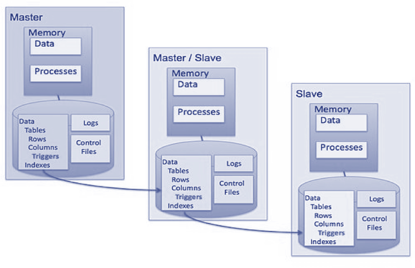
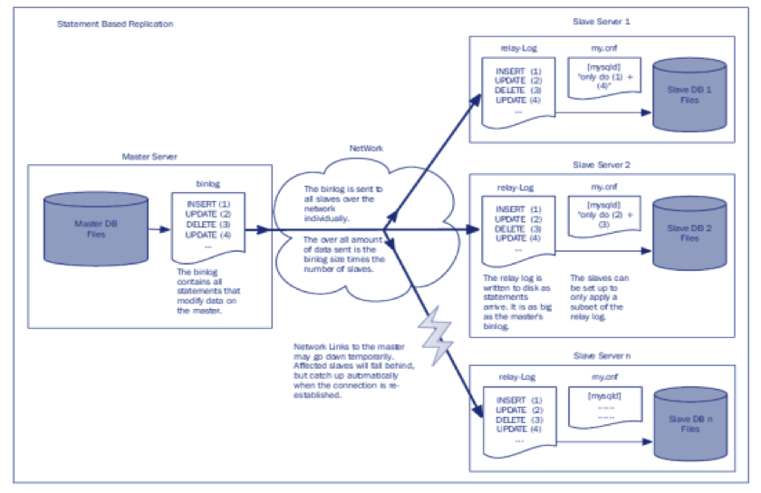

Veri Dağıtma Yöntemleri
Gülçin Yıldırım, Junior DBA @Tart New Media
Emre Hasegeli, DBA @Tart New Media
Biz Kimiz?
Tart New Media projelerinin veri tabanı yönetimini yapıyoruz.
Müşterilerimiz
Girişimlerimiz
Nedir? Neden Gerekli?
Sorunlar Neler?

Açık Kaynak Kodlu Uygulamalar


Ticari Uygulamalar

PostgreSQL
MongoDB
MySQL
Redis
OpenLDAP
Veri Dağıtma Modelleri (Topolojiler)


Master Slave
Master Master
Master
Slave Slave Slave

Zamana Göre
Yapısal Olarak
Paylaşılan Disk Yöntemi ile Veri Kopyalama
Dosya Sistemi Düzeyinde Veri Kopyalama
Tetikleyici Kullanarak Veri Kopyalama
Ara Katman Kullanarak Veri Kopyalama
Sonradan Birleştirme Yöntemi ile Veri Kopyalama
Kayıtları Taşıma Yöntemi ile Veri Kopyalama
Değişiklikleri Gönderme Yöntemi ile Veri Kopyalama
Veri Bölme
Veri tabanını parçalamak büyük veri tabanınızı birden çok daha küçük veri tabanlarına ayırmak hiçbir şey paylaştırmadan çoklu sunuculara yaymaktır.
Hiçbir şeyi Paylaşma Yaklaşımı
Avantajlar
Dezavantajlar
Haydi Sor!
Teşekkürler!
Gülçin Yıldırım, Tart New Media
gulcin.yildirim@tart.com.tr
Emre Hasegeli, Tart New Media
emre.hasegeli@tart.com.tr
Bu sunum Reveal.js ile hazırlandı.
Bulutlar için www.clicktorelease.com/code/css3dclouds adresinden yararlanıldı
Kaynaklar
Database Replication – Synthesis Lectures on Data Management
High Availability, Load Balancing, and Replication
Adventures in Scaling, PostgreSQL Streaming Replication